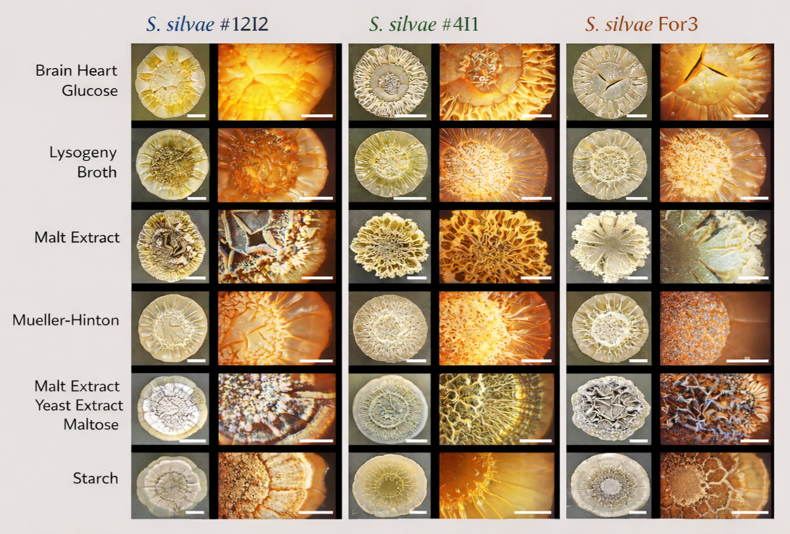

Dr. Daniela Hartmann · Technische Universität Dresden · daniela.hartmann@tu-dresden.de
This project documents genomic and physiological analyses of S. silvae strains performed during doctoral research.
The study integrates comparative genomics, genome architecture, phylogenomics, and experimental physiology in order to explore genomic diversity and ecological adaptability within the S. silvae clade.
The study investigates genomic diversity and ecological adaptability within the S. silvae clade using comparative genomics, genome architecture analysis, phylogenomics, and physiological characterization.
Includes ANI, synteny analysis, genome maps, and BGC profiling.
Reveals morphology, microstructure, and stress tolerance.
